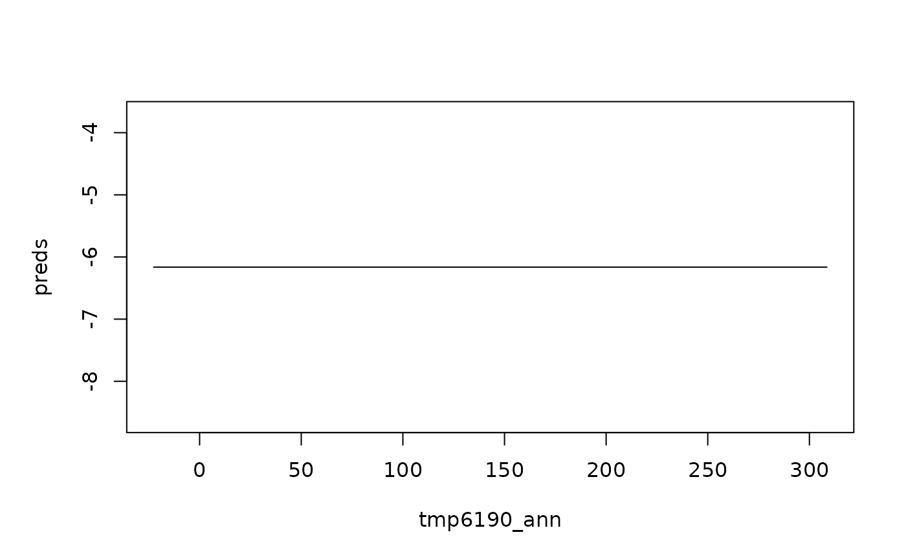

This function is a wrapper around maxnet::maxnet, which takes a formula with data
as well exposing parameters for normalisation in a manner compatible with
parsnip. Users are unlikely to use this function directly. For the
parsnip model specification for MaxEnt, see maxent().
Usage
maxnet_fit(
formula,
data,
regmult = 1,
classes = "default",
regfun = maxnet::maxnet.default.regularization,
addsamplestobackground = TRUE,
...
)Arguments
- formula
a formula defining the outcome and the predictors
- data
a data.frame with the outcomes and predictors
- regmult
numeric, a constant to adjust regularization
- classes
character, continuous feature classes desired, either "default" or any subset of "lqpht" (for example, "lh")
- regfun
function, computes regularization constant for each feature
- addsamplestobackground
logical, if TRUE then add to the background any presence sample that is not already there
- ...
currently not used.
Value
Maxnet returns an object of class maxnet, which is a list
consisting of a glmnet model with the following elements added:
- betas
nonzero coefficients of the fitted model
- alpha
constant offset making the exponential model sum to one over the background data
- entropy
entropy of the exponential model
- penalty.factor
the regularization constants used for each feature
- featuremins
minimum of each feature, to be used for clamping
- featuremaxs
maximum of each feature, to be used for clamping
- varmin
minimum of each predictor, to be used for clamping
- varmax
maximum of each predictor, to be used for clamping
- samplemeans
mean of each predictor over samples (majority for factors)
- levels
levels of each predictor that is a factor
Details
The response needs to be a factor with the class representing presences as the reference level of the factor (as expected by other classification models). A good guide to how options of a Maxent model work can be found in https://onlinelibrary.wiley.com/doi/full/10.1111/j.1600-0587.2013.07872.x
Examples
# \donttest{
# we repeat the example in the `maxnet` package
data("bradypus", package = "maxnet")
bradypus_tb <- tibble::as_tibble(bradypus) %>%
dplyr::mutate(presence = relevel(
factor(
dplyr::case_match(presence, 1 ~ "presence", 0 ~ "absence")
),
ref = "presence"
))
mod <- maxnet_fit(presence ~ ., data = bradypus_tb, classes = "lq")
plot(mod, "tmp6190_ann")

# }